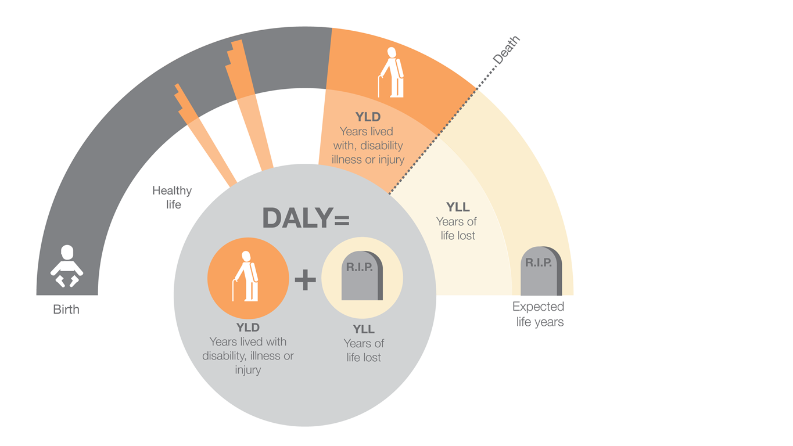

People across the world are affected by diseases, injuries and disabilities.
The time spent living with these burdens combined with the time lost comes
together as Disability-adjusted life years (DALY). This is a
a measure of overall burden on individuals.
People across the world are affected by diseases, injuries and disabilities.
The time spent living with these burdens combined with the time lost comes
together as Disability-adjusted life years (DALY). This is a
a measure of overall burden on individuals.
Life Expectancy
Life Expectancy
Life Expectancy
Food
 YLD = Sum of incidence × duration × severity weight, and YLL = Sum of number of deaths × standard life expectancy at age of deathLife expectancy increases as the year progresses. This is an interactive motion chart inspired by Hans Rosling. The motion chart shows dot of different regions and their relations to life expectancy and GDP. The country with the larger radius are the country with the higher population. The dates can also be scrolled after the animation finishes to select which year to play the animation back to. This allows you to interactively view the changes over time
ContinueThis is a Stacked Area Chart that shows the different types of factors that contribute to the overal DALY of all of the countries across the world. You can select which factor to view, by checking or unchecking, this allows you to compare each of the factors. The Stacked Area Chart also has options that allow you to check the comparison percentage or the actual figure, have a play
ContinueDid you know about 1070 Lives are lost per 100, 000 of a population in Swaziland
Try calculating for other countries by dividing their DALY by their average life expectancy for the year 2014
There are 5 countries shown on this graph, you can view and compare each country and their DALY figure per 100, 000 of a population. The countries listed have a mixed range in terms of human developmental index. Try hovering over the pie chart or the bar chart itself. Hovering over the pie chart would allow you to view how different factors between communicable diseaese, non-communicable disease and injuries contribute to the DALY of each countries.